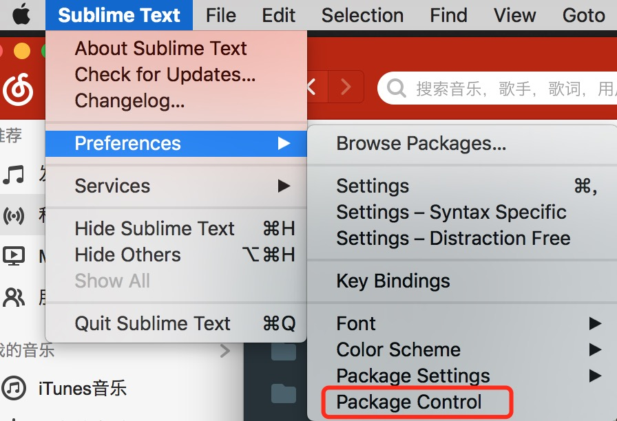
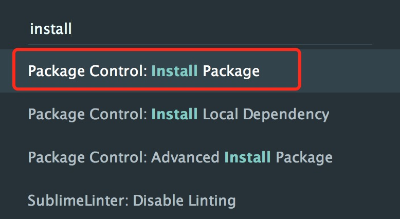
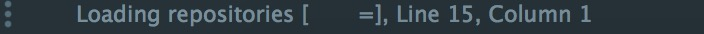
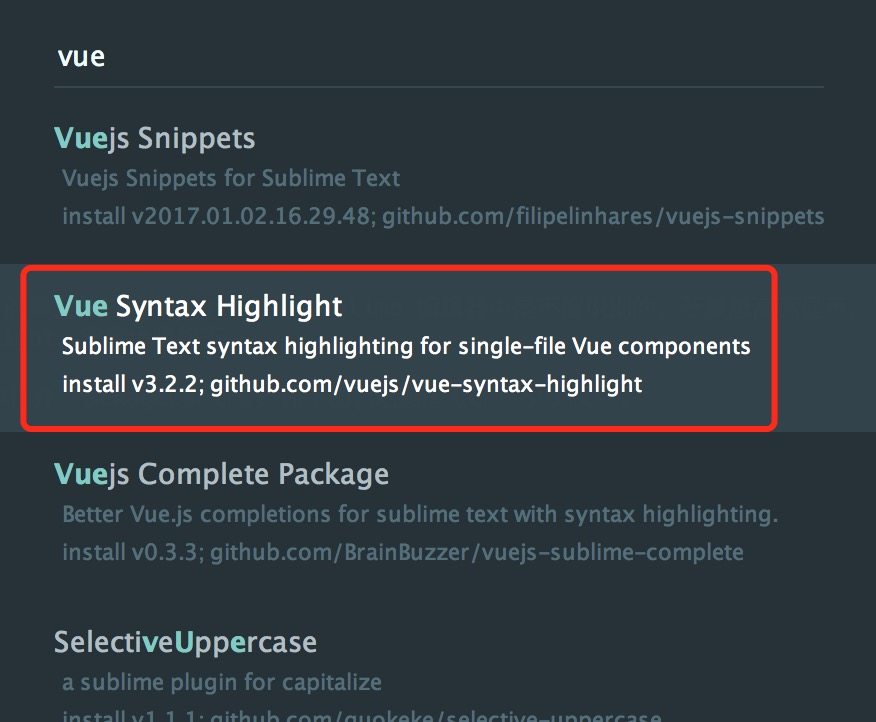
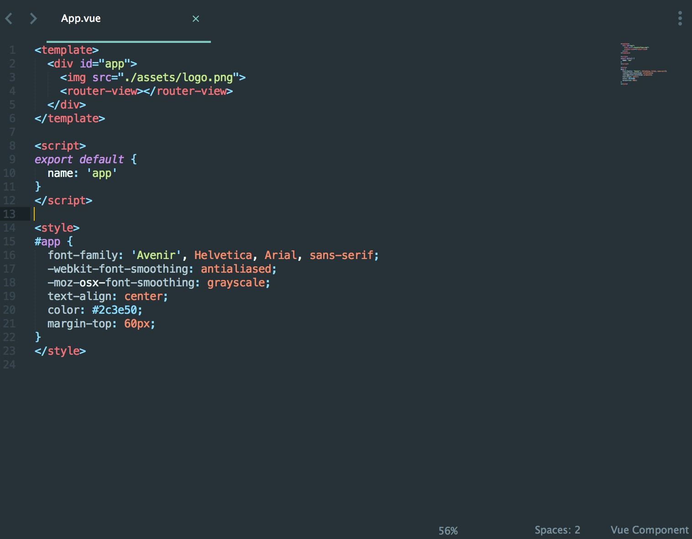

<div ref="streamContainer" class="stream-container">
    <div class="post-list-container post-list-container-shadow">
        <div class="post">
            <div class="post-head-wrapper-text-only"
                 style="background-image: url('')">
                <div class="post-title">
                    Sublime Text 3 安装Vue语法高亮插件
                    <div class="post-meta">
                        <time datetime="2017-04-15T23:31:57.000Z" itemprop="datePublished">
                            2017-04-15 23:31
                        </time>&nbsp;
                        
                        
                        <i class="material-icons" style="">folder</i>
                        
                        <a href='/categories/Tools/'>Tools</a>
                        
                        
    
                        
                        
                        <i class="material-icons" style="">label</i>
                        
                        <a href='/tags/Vue/'>Vue</a>, 
                        
                        <a href='/tags/Sublime/'>Sublime</a>
                        
                        
                    </div>
                </div>
            </div>
    
            <div class="post-body-wrapper">
                <div class="post-body">
                    <!-- no node -->

<span id="more"></span>

<p>默认情况下，Vue.js 的单文件组件（*.vue）在 sublime 编辑器中是不被识别的。若要想高亮显示，需要安装插件 Vue Syntax Hightlight。安装步骤如下：</p>
<p>第一，在 Sublime 中打开 PackageControl 如下图,快捷键 Ctrl+Shift+P。</p>
<p></p>
<p>第二，打开 Install Package 窗口。下图中第一个，回车。</p>
<p></p>
<p>打开过程中，右下角出现状态栏。如下图</p>
<p></p>
<p>第三，打到插件，回车安装，如下图。</p>
<p></p>
<p>重新打开 *.vue 文件，高亮显示安装成功。</p>
<p></p>

                </div>
            </div>

            
            
            
    
            
    
            
        </div>
    </div>
    
</div>


